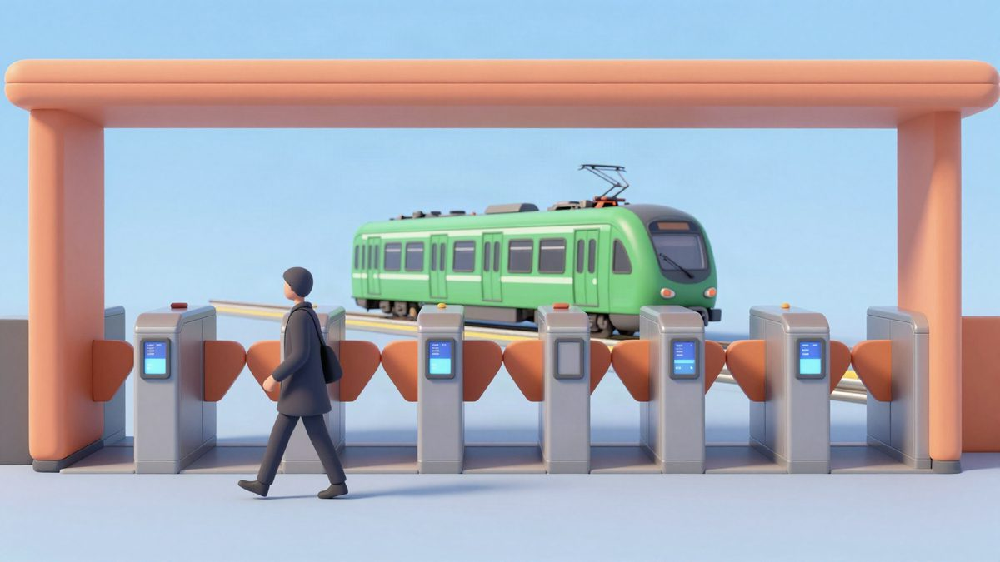

Xiaomi tvrdi da Pengcheng N70 ostaje stabilan i kad na 160 km/h puknu dvije gume

Xiaomi je za model Pengcheng N70 najavio funkciju stabilizacije pri puknuću gume na velikoj brzini, i to kao standardnu opremu u svim izvedbama. Lei Jun tvrdi da auto ostaje stabilan i kad na 160 km/h istodobno puknu dvije gume. Cijena i dostupnost modela nisu poznate.
Osnivač Xiaomija Lei Jun objavio je na Weibu da je Pengcheng N70 projektiran prema visokim sigurnosnim standardima industrije. Funkcija stabilizacije pri puknuću gume na velikoj brzini, tvrdi, dolazi serijski u cijeloj ponudi modela. Auto može ostati stabilan i ako se pri 160 km/h istodobno probuše dvije gume. Vijest je objavljena 14. studenoga.
Lei Jun posebno ističe da je funkcija u svim izvedbama. Kaže da Xiaomi tako širi aktivnu sigurnosnu tehnologiju koja se dosad uglavnom nudila na skupljim modelima, pa je dobiva više kupaca.
Zašto je puknuće gume opasno
Puknuće gume na autocesti jedna je od najopasnijih situacija u vožnji. Guma odmah gubi prianjanje, a auto se može povući u stranu, zanijeti ili izmaknuti kontroli. Ako vozač pogrešno reagira, to može završiti teškom nesrećom.
Puknuće dviju guma istodobno od sustava za stabilnost traži još više. Sile na obje strane vozila naglo se promijene, pa auto mora u vrlo kratkom roku prepoznati položaj karoserije, prilagoditi pogon i rasporediti kočnu silu kako bi se smanjio rizik od gubitka kontrole.
Kako funkcija radi
Funkcija na Pengcheng N70 oslanja se na sustave upravljanja šasijom koji međusobno surađuju. Kad se na gumi pojavi problem, sustav ispravlja položaj vozila i pomaže vozaču da zadrži smjer.
Demonstracija pri 160 km/h prikazuje sposobnost u ekstremnim uvjetima. Takva funkcija ne zamjenjuje potrebu da vozač pravodobno uspori i sigurno zaustavi vozilo.
Trend u industriji
Natjecanje među proizvođačima električnih i hibridnih vozila posljednjih se godina više ne vodi samo oko dometa, snage i pametnih kabina. Sve se češće širi na upravljanje šasijom i aktivnu sigurnost. Lei Junovo isticanje stabilizacije pri puknuću gume pokazuje da Xiaomi na to stavlja naglasak.
Izvor: MyDrivers (快科技)
Povezani članci
 Terra Drone je razvio vlastiti GCS za nadzor više presretačkih dronova i isporučio ga japanskoj agenciji za obrambenu opremu26. studenoga 2026.
Terra Drone je razvio vlastiti GCS za nadzor više presretačkih dronova i isporučio ga japanskoj agenciji za obrambenu opremu26. studenoga 2026. Xiaomi OTA 1.20: iPhone postaje ključ automobila, a gradski asistent se otključava već nakon 100 km27. studenoga 2026.
Xiaomi OTA 1.20: iPhone postaje ključ automobila, a gradski asistent se otključava već nakon 100 km27. studenoga 2026.
JR East uvodi ulaz u vlak bez tapkanja: vrata s UWB tehnologijom na 40 postaja u Tokiju od 2028. godine26. studenoga 2026.